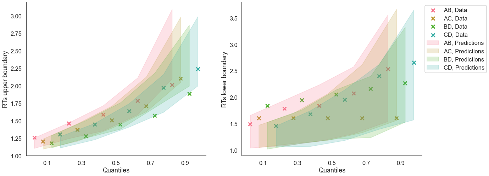

Fit the DDM on individual data¶
[1]:
import rlssm
import pandas as pd
import os
Import the data¶
[2]:
par_path = os.path.abspath(os.path.join(os.getcwd(), os.pardir, os.pardir))
data_path = os.path.join(par_path, 'data/data_experiment.csv')
data = pd.read_csv(data_path, index_col=0)
data = data[data.participant == 20].reset_index(drop=True)
data['block_label'] += 1
data.head()
[2]:
| participant | block_label | trial_block | f_cor | f_inc | cor_option | inc_option | times_seen | rt | accuracy | |
|---|---|---|---|---|---|---|---|---|---|---|
| 0 | 20 | 1.0 | 1.0 | 46.0 | 46.0 | 4 | 2 | 1.0 | 2.574407 | 1.0 |
| 1 | 20 | 1.0 | 2.0 | 60.0 | 33.0 | 4 | 2 | 2.0 | 1.952774 | 1.0 |
| 2 | 20 | 1.0 | 3.0 | 32.0 | 44.0 | 2 | 1 | 2.0 | 2.074999 | 0.0 |
| 3 | 20 | 1.0 | 4.0 | 56.0 | 40.0 | 4 | 2 | 3.5 | 2.320916 | 0.0 |
| 4 | 20 | 1.0 | 5.0 | 34.0 | 32.0 | 2 | 1 | 3.5 | 1.471107 | 1.0 |
Initialize the model¶
[3]:
model = rlssm.DDModel(hierarchical_levels = 1)
Using cached StanModel
[4]:
model.family, model.model_label, model.hierarchical_levels
[4]:
('DDM', 'DDM', 1)
[5]:
model.starting_point_bias
[5]:
False
Fit¶
[6]:
# sampling parameters
n_iter = 1000
n_chains = 2
n_thin = 1
[7]:
model_fit = model.fit(
data,
thin = n_thin,
iter = n_iter,
chains = n_chains,
pointwise_waic=False,
verbose = False)
WARNING:pystan:Maximum (flat) parameter count (1000) exceeded: skipping diagnostic tests for n_eff and Rhat.
To run all diagnostics call pystan.check_hmc_diagnostics(fit)
Checks MCMC diagnostics:
n_eff / iter looks reasonable for all parameters
0.0 of 1000 iterations ended with a divergence (0.0%)
0 of 1000 iterations saturated the maximum tree depth of 10 (0.0%)
E-BFMI indicated no pathological behavior
get Rhat¶
[8]:
model_fit.rhat.describe()
[8]:
| rhat | |
|---|---|
| count | 3.000000 |
| mean | 1.000108 |
| std | 0.001876 |
| min | 0.998233 |
| 25% | 0.999170 |
| 50% | 1.000107 |
| 75% | 1.001046 |
| max | 1.001985 |
[9]:
model_fit.rhat.head()
[9]:
| rhat | variable | |
|---|---|---|
| 0 | 1.000107 | drift |
| 1 | 0.998233 | threshold |
| 2 | 1.001985 | ndt |
get wAIC¶
[10]:
model_fit.waic
[10]:
{'lppd': -224.51089269946007,
'p_waic': 4.568369989137585,
'waic': 458.1585253771953,
'waic_se': 35.614308641058926}
Posteriors¶
[27]:
model_fit.samples.describe()
[27]:
| chain | draw | transf_drift | transf_threshold | transf_ndt | |
|---|---|---|---|---|---|
| count | 1000.00000 | 1000.000000 | 1000.000000 | 1000.000000 | 1000.000000 |
| mean | 0.50000 | 249.500000 | 0.950234 | 2.046214 | 0.917508 |
| std | 0.50025 | 144.409501 | 0.083177 | 0.076415 | 0.012294 |
| min | 0.00000 | 0.000000 | 0.679088 | 1.845066 | 0.865905 |
| 25% | 0.00000 | 124.750000 | 0.893585 | 1.995491 | 0.910507 |
| 50% | 0.50000 | 249.500000 | 0.948448 | 2.042306 | 0.919264 |
| 75% | 1.00000 | 374.250000 | 1.006465 | 2.097855 | 0.926007 |
| max | 1.00000 | 499.000000 | 1.237784 | 2.330128 | 0.944063 |
[12]:
import seaborn as sns
sns.set(context = "talk",
style = "white",
palette = "husl",
rc={'figure.figsize':(15, 8)})
[13]:
model_fit.plot_posteriors(height=5, show_intervals="HDI", alpha_intervals=.05);

Posterior predictives¶
Ungrouped¶
[14]:
pp = model_fit.get_posterior_predictives_df(n_posterior_predictives=100)
pp
[14]:
| variable | rt | ... | accuracy | ||||||||||||||||||
|---|---|---|---|---|---|---|---|---|---|---|---|---|---|---|---|---|---|---|---|---|---|
| trial | 1 | 2 | 3 | 4 | 5 | 6 | 7 | 8 | 9 | 10 | ... | 231 | 232 | 233 | 234 | 235 | 236 | 237 | 238 | 239 | 240 |
| sample | |||||||||||||||||||||
| 1 | 1.594541 | 1.162541 | 1.289541 | 1.754541 | 1.753541 | 1.811541 | 1.320541 | 1.341541 | 1.402541 | 1.497541 | ... | 1.0 | 1.0 | 1.0 | 1.0 | 1.0 | 1.0 | 1.0 | 1.0 | 1.0 | 1.0 |
| 2 | 1.825413 | 3.402413 | 3.323413 | 1.640413 | 3.008413 | 1.461413 | 1.797413 | 1.333413 | 1.849413 | 1.565413 | ... | 1.0 | 1.0 | 0.0 | 1.0 | 1.0 | 0.0 | 0.0 | 1.0 | 1.0 | 1.0 |
| 3 | 1.106817 | 1.765817 | 1.790817 | 1.213817 | 2.590817 | 1.804817 | 1.824817 | 2.411817 | 1.685817 | 1.159817 | ... | 0.0 | 1.0 | 1.0 | 0.0 | 1.0 | 1.0 | 1.0 | 0.0 | 1.0 | 1.0 |
| 4 | 1.458243 | 1.512243 | 1.121243 | 1.409243 | 2.005243 | 1.174243 | 2.046243 | 1.456243 | 1.286243 | 2.749243 | ... | 0.0 | 0.0 | 1.0 | 1.0 | 1.0 | 1.0 | 0.0 | 1.0 | 1.0 | 1.0 |
| 5 | 1.370265 | 3.151265 | 1.708265 | 1.207265 | 1.269265 | 1.261265 | 1.256265 | 1.958265 | 1.652265 | 3.398265 | ... | 1.0 | 1.0 | 1.0 | 1.0 | 1.0 | 1.0 | 1.0 | 1.0 | 1.0 | 1.0 |
| ... | ... | ... | ... | ... | ... | ... | ... | ... | ... | ... | ... | ... | ... | ... | ... | ... | ... | ... | ... | ... | ... |
| 96 | 1.159170 | 1.324170 | 1.612170 | 1.214170 | 2.033170 | 1.620170 | 1.644170 | 3.080170 | 1.342170 | 4.476170 | ... | 1.0 | 0.0 | 0.0 | 1.0 | 1.0 | 1.0 | 0.0 | 1.0 | 0.0 | 1.0 |
| 97 | 1.213858 | 1.226858 | 1.714858 | 1.259858 | 1.348858 | 1.542858 | 1.845858 | 1.163858 | 1.249858 | 1.375858 | ... | 1.0 | 1.0 | 0.0 | 1.0 | 1.0 | 1.0 | 1.0 | 1.0 | 1.0 | 1.0 |
| 98 | 2.541807 | 1.892807 | 2.210807 | 1.674807 | 1.327807 | 3.093807 | 1.470807 | 1.102807 | 1.270807 | 1.553807 | ... | 1.0 | 1.0 | 1.0 | 1.0 | 1.0 | 0.0 | 1.0 | 1.0 | 1.0 | 1.0 |
| 99 | 1.695184 | 1.407184 | 1.459184 | 1.198184 | 1.206184 | 1.881184 | 1.444184 | 1.324184 | 1.227184 | 1.221184 | ... | 0.0 | 1.0 | 1.0 | 1.0 | 1.0 | 1.0 | 1.0 | 1.0 | 1.0 | 1.0 |
| 100 | 1.549069 | 1.251069 | 1.501069 | 1.553069 | 1.048069 | 1.532069 | 1.330069 | 1.971069 | 1.077069 | 2.460069 | ... | 1.0 | 1.0 | 1.0 | 1.0 | 1.0 | 1.0 | 1.0 | 1.0 | 1.0 | 1.0 |
100 rows × 480 columns
[15]:
pp_summary = model_fit.get_posterior_predictives_summary(n_posterior_predictives=100)
pp_summary
[15]:
| mean_accuracy | mean_rt | skewness | quant_10_rt_low | quant_30_rt_low | quant_50_rt_low | quant_70_rt_low | quant_90_rt_low | quant_10_rt_up | quant_30_rt_up | quant_50_rt_up | quant_70_rt_up | quant_90_rt_up | |
|---|---|---|---|---|---|---|---|---|---|---|---|---|---|
| sample | |||||||||||||
| 1 | 0.858333 | 1.665562 | 1.672090 | 1.142541 | 1.287541 | 1.557541 | 1.860141 | 2.305141 | 1.150041 | 1.286041 | 1.502541 | 1.823041 | 2.422041 |
| 2 | 0.879167 | 1.708663 | 1.724117 | 1.181213 | 1.399013 | 1.478413 | 1.736613 | 1.970013 | 1.156413 | 1.363413 | 1.571413 | 1.823413 | 2.541413 |
| 3 | 0.908333 | 1.708879 | 1.070508 | 1.215217 | 1.359217 | 1.493817 | 1.755317 | 2.083217 | 1.188517 | 1.389117 | 1.598817 | 1.858217 | 2.476017 |
| 4 | 0.887500 | 1.822226 | 1.843154 | 1.293643 | 1.460443 | 1.634243 | 2.156243 | 2.787443 | 1.157443 | 1.323443 | 1.595243 | 1.906043 | 2.895443 |
| 5 | 0.879167 | 1.720669 | 4.087544 | 1.175465 | 1.241665 | 1.518265 | 1.799065 | 2.314865 | 1.160265 | 1.331265 | 1.510265 | 1.837265 | 2.470265 |
| ... | ... | ... | ... | ... | ... | ... | ... | ... | ... | ... | ... | ... | ... |
| 96 | 0.870833 | 1.816528 | 2.002940 | 1.182170 | 1.343170 | 1.593170 | 2.077170 | 2.343170 | 1.178770 | 1.350970 | 1.582170 | 1.911770 | 2.682570 |
| 97 | 0.850000 | 1.820087 | 1.513412 | 1.165858 | 1.251858 | 1.496858 | 1.829358 | 2.250858 | 1.182658 | 1.405758 | 1.647858 | 2.006858 | 2.808658 |
| 98 | 0.879167 | 1.764307 | 1.687487 | 1.178407 | 1.325607 | 1.409807 | 1.946007 | 2.770007 | 1.159807 | 1.345807 | 1.598807 | 1.910807 | 2.626807 |
| 99 | 0.891667 | 1.764413 | 1.777278 | 1.319184 | 1.447184 | 1.593184 | 2.023684 | 2.407684 | 1.161384 | 1.366184 | 1.608684 | 1.924084 | 2.441284 |
| 100 | 0.866667 | 1.617074 | 2.062171 | 1.141569 | 1.317169 | 1.469569 | 1.834969 | 2.343869 | 1.169469 | 1.330069 | 1.480069 | 1.703969 | 2.138369 |
100 rows × 13 columns
[16]:
model_fit.plot_mean_posterior_predictives(n_posterior_predictives=100, figsize=(20,8), show_intervals='HDI');

[17]:
model_fit.plot_quantiles_posterior_predictives(n_posterior_predictives=100, kind='shades');
/Users/laurafontanesi/git/rlssm/rlssm/random.py:210: RuntimeWarning: invalid value encountered in multiply
acc = np.empty(shape)*np.nan
/Users/laurafontanesi/git/rlssm/rlssm/random.py:211: RuntimeWarning: invalid value encountered in multiply
rt = np.empty(shape)*np.nan

Grouped¶
[18]:
import numpy as np
[19]:
data['choice_pair'] = 'AB'
data.loc[(data.cor_option == 3) & (data.inc_option == 1), 'choice_pair'] = 'AC'
data.loc[(data.cor_option == 4) & (data.inc_option == 2), 'choice_pair'] = 'BD'
data.loc[(data.cor_option == 4) & (data.inc_option == 3), 'choice_pair'] = 'CD'
data['block_bins'] = pd.cut(data.trial_block, 8, labels=np.arange(1, 9))
[20]:
data.head()
[20]:
| index | participant | block_label | trial_block | f_cor | f_inc | cor_option | inc_option | times_seen | rt | accuracy | accuracy_neg | accuracy_flipped | choice_pair | block_bins | |
|---|---|---|---|---|---|---|---|---|---|---|---|---|---|---|---|
| 0 | 0 | 20 | 1.0 | 1.0 | 46.0 | 46.0 | 4 | 2 | 1.0 | 2.574407 | 1.0 | 1 | -0.0 | BD | 1 |
| 1 | 1 | 20 | 1.0 | 2.0 | 60.0 | 33.0 | 4 | 2 | 2.0 | 1.952774 | 1.0 | 1 | -0.0 | BD | 1 |
| 2 | 2 | 20 | 1.0 | 3.0 | 32.0 | 44.0 | 2 | 1 | 2.0 | 2.074999 | 0.0 | -1 | 1.0 | AB | 1 |
| 3 | 3 | 20 | 1.0 | 4.0 | 56.0 | 40.0 | 4 | 2 | 3.5 | 2.320916 | 0.0 | -1 | 1.0 | BD | 1 |
| 4 | 4 | 20 | 1.0 | 5.0 | 34.0 | 32.0 | 2 | 1 | 3.5 | 1.471107 | 1.0 | 1 | -0.0 | AB | 1 |
[21]:
model_fit.get_grouped_posterior_predictives_summary(
grouping_vars=['block_label', 'choice_pair'],
quantiles=[.3, .5, .7],
n_posterior_predictives=100)
/Users/laurafontanesi/git/rlssm/rlssm/random.py:210: RuntimeWarning: invalid value encountered in multiply
acc = np.empty(shape)*np.nan
/Users/laurafontanesi/git/rlssm/rlssm/random.py:211: RuntimeWarning: invalid value encountered in multiply
rt = np.empty(shape)*np.nan
[21]:
| mean_accuracy | mean_rt | skewness | quant_30_rt_low | quant_30_rt_up | quant_50_rt_low | quant_50_rt_up | quant_70_rt_low | quant_70_rt_up | |||
|---|---|---|---|---|---|---|---|---|---|---|---|
| block_label | choice_pair | sample | |||||||||
| 1.0 | AB | 1 | 0.95 | 1.682741 | 0.051371 | 2.288541 | 1.383341 | 2.288541 | 1.655541 | 2.288541 | 1.945741 |
| 2 | 0.85 | 1.651663 | 1.031071 | 1.360213 | 1.282213 | 1.377413 | 1.451413 | 1.772613 | 1.770413 | ||
| 3 | 0.95 | 1.743317 | 0.876341 | 2.408817 | 1.345217 | 2.408817 | 1.565817 | 2.408817 | 1.929817 | ||
| 4 | 0.80 | 1.739193 | 0.230977 | 1.585243 | 1.368743 | 1.790243 | 1.717743 | 1.970243 | 2.056243 | ||
| 5 | 1.00 | 1.615365 | 0.888593 | NaN | 1.455965 | NaN | 1.574265 | NaN | 1.707365 | ||
| ... | ... | ... | ... | ... | ... | ... | ... | ... | ... | ... | ... |
| 3.0 | CD | 96 | 0.85 | 1.712370 | 1.411909 | 1.435370 | 1.345570 | 1.630170 | 1.624170 | 1.685370 | 1.854170 |
| 97 | 0.90 | 1.832358 | 0.912827 | 2.639658 | 1.426858 | 2.692858 | 1.541858 | 2.746058 | 1.791758 | ||
| 98 | 0.90 | 1.718357 | 1.986354 | 1.268607 | 1.290807 | 1.283807 | 1.489807 | 1.299007 | 1.933407 | ||
| 99 | 0.80 | 1.774484 | 2.695123 | 1.221784 | 1.390184 | 1.297684 | 1.596184 | 1.381784 | 2.005184 | ||
| 100 | 0.95 | 1.708869 | 1.609479 | 2.969069 | 1.487869 | 2.969069 | 1.646069 | 2.969069 | 1.733869 |
1200 rows × 9 columns
[22]:
model_fit.get_grouped_posterior_predictives_summary(
grouping_vars=['block_bins'],
quantiles=[.3, .5, .7],
n_posterior_predictives=100)
[22]:
| mean_accuracy | mean_rt | skewness | quant_30_rt_low | quant_30_rt_up | quant_50_rt_low | quant_50_rt_up | quant_70_rt_low | quant_70_rt_up | ||
|---|---|---|---|---|---|---|---|---|---|---|
| block_bins | sample | |||||||||
| 1 | 1 | 0.933333 | 1.593908 | 1.105874 | 1.466141 | 1.301141 | 1.538541 | 1.477541 | 1.610941 | 1.730141 |
| 2 | 0.866667 | 1.823280 | 2.922837 | 1.275313 | 1.258913 | 2.053913 | 1.594413 | 2.851213 | 1.677413 | |
| 3 | 0.933333 | 1.807884 | 1.061185 | 1.547017 | 1.390417 | 1.617817 | 1.730317 | 1.688617 | 2.041917 | |
| 4 | 0.800000 | 1.727343 | 1.471560 | 1.301743 | 1.269743 | 1.336743 | 1.656743 | 1.397243 | 1.989043 | |
| 5 | 0.833333 | 1.780965 | 3.304995 | 1.486265 | 1.439065 | 1.550265 | 1.692265 | 1.677465 | 1.861865 | |
| ... | ... | ... | ... | ... | ... | ... | ... | ... | ... | ... |
| 8 | 96 | 0.833333 | 1.719803 | 1.397395 | 1.221770 | 1.328170 | 1.224170 | 1.531170 | 1.343370 | 1.902970 |
| 97 | 0.833333 | 1.890058 | 0.818019 | 1.898058 | 1.500658 | 2.366858 | 1.749858 | 2.370058 | 2.090058 | |
| 98 | 0.900000 | 1.584473 | 1.739119 | 1.412207 | 1.349807 | 1.543807 | 1.537807 | 1.702607 | 1.687807 | |
| 99 | 0.866667 | 1.708684 | 1.981371 | 1.373784 | 1.313184 | 1.460684 | 1.496684 | 1.604984 | 1.717684 | |
| 100 | 1.000000 | 1.909169 | 0.697978 | NaN | 1.517769 | NaN | 1.905569 | NaN | 2.168869 |
800 rows × 9 columns
[23]:
model_fit.plot_mean_grouped_posterior_predictives(grouping_vars=['block_bins'],
n_posterior_predictives=100,
figsize=(20,8));

[26]:
model_fit.plot_quantiles_grouped_posterior_predictives(
n_posterior_predictives=100,
grouping_var='choice_pair',
kind='shades',
quantiles=[.1, .3, .5, .7, .9])
/Users/laurafontanesi/git/rlssm/rlssm/random.py:210: RuntimeWarning: invalid value encountered in multiply
acc = np.empty(shape)*np.nan
/Users/laurafontanesi/git/rlssm/rlssm/random.py:211: RuntimeWarning: invalid value encountered in multiply
rt = np.empty(shape)*np.nan
[26]:


[ ]: